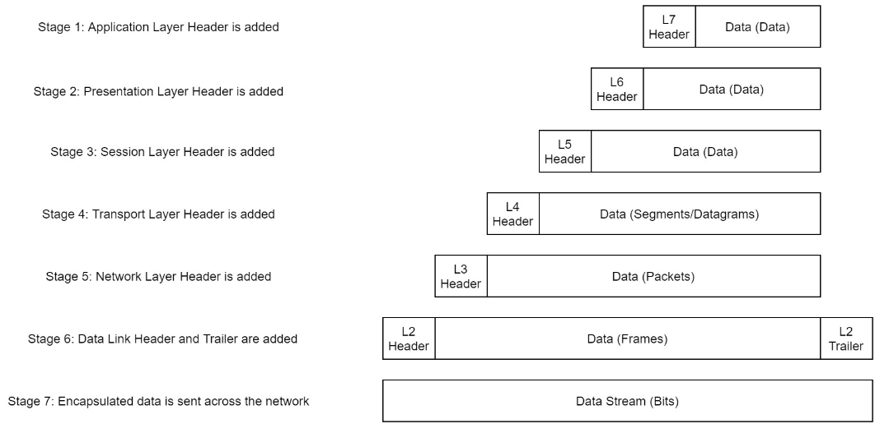
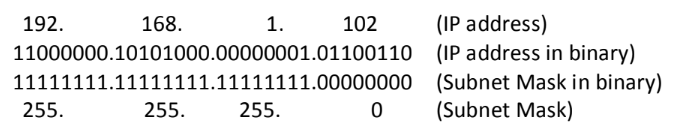
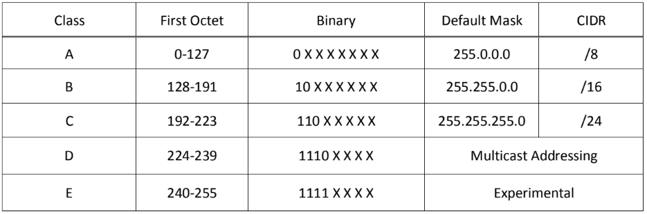

Open Systems Interconnection (OSI) ModelEncapsulationTCP/IP ModelNetworking ToolsDomain Name System (DNS) 53/tcp/udpLogical Addressing/IP Version 4 (IPv4)Subnet MaskIP Address ClassesSubnetting IP AddressesSeven Steps to Subnetting
demonstrates the theory behind computer networking
| OSI Model | Description |
|---|---|
| Application | End-User software such as web browsers. Human-computer interaction layer, where applications can access network services |
| Presentation | translates the data into a standardized format to ensure that data usable. it also handles encryption, compression or other transformations to the data. |
| Session | Maintains connections and is responsible for controlling ports and sessions |
| Transport | chooses protocol (TCP/UDP) then divides the transmission up into byte-sized pieces, which makes it easier to transmit the messages successfully |
| Network | locates the destination/path of your target. Logical Addressing (IP addresses). Figures out the best route to take |
| Data Link | physical addressing (MAC) of the transmission. receives a packet from network layer and adds the mac address. ensures traffic is not corrupted during transmission |
| Physical | hardware of the computer. Transmits and receives raw bit stream over physical medium |
As data passes down each layer of the OSI model, more information is added to the layer with a header

| Layer | Encapsulation Header Name |
|---|---|
| 7,6,5 | data |
| 4 | segment (TCP), datagram (UDP) |
| 3 | packet |
| 2 | frame |
| 1 | bits |
When the message is received by the second computer it reverses the process (de-encapsulation), starting at the physical layer and working up until it reaches the application layer.
Developed by DoD in 1982
Serves as the basis for real-world networking. The OSI model is more used to teach beginners. Encapsulation is done in the exact same way as OSI.
| TCP/IP | OSI Model Comparison |
|---|---|
| Application | Application, Presentation, Session |
| Transport | Transport |
| Internet | Network |
| Network Interface | Data Link, Physical |
TCP is a connection-based protocol used to transmit data. You must have a stable connection this is ensured using a three-way handshake
| Command | Description |
|---|---|
ping <target> | test if a connection to a remote resource is possible. Uses ICMP protocol. Will show IP of a domain. Ctrl+C to close, -c# to send a certain number of pings |
| TTL 64 = linux , 128 = windows, 255 = solaris,router | |
traceroute <destination> | map the path your request takes as it heads to the target machine. Shows each router in your path to target |
tracert <destination> for windows | |
whois <domain> | queries who a domain name is registered to as well as additional information |
dig <domain> @<dns_server_IP> | allows for the manual query of recursive dns servers of our choice for information about domains. |
Allows us to ask a special server to give us the IP address of the website we are trying to access.
4 DNS Servers involved in loading a webpage:
DNS recursor- server designed to receive queries from client machines through applications. Think of a librarian who is asked to find a book in a library
Root nameserver - translates human readable host names to IP addresses. Think of an index in a library that points to different racks of books.
TLD nameserver - top level domain server. last step in the search for a specific IP address and it hosts the last portion of a hostname (.com). Think of a specific rack of books
Authoritative nameserver - Final nameserver. if it has access to the requested record it will return the IP address back to the DNS recursor.
Makes internetwork communication possible
Consists of four numbers each can range from 0 - 255 and is known as an octet.
Represented in dotted decimal notation. consists of two distinct portions the network and the host.
192.168.10.154
defines where the network id (represented in 1's) stops and where the host id (represented in 0's) begins
Network ID - start on the left and identifies the network segment on which the host is located
Host ID - identifies a particular host on a network segment


Classless Interdomain Routing (CIDR)
Represented as a / followed by the number of network bits used in an IP address
192.168.10.152/24
Subnetting is used to break larger networks into smaller networks known as a subnet
Using Formulas to determine number of subnets and hosts in a particular network
Figure out number of subnets:
x2ⁿ (where n = # of bits used - default network bits)Example:205.175.17.160/2727 (# of bits used) - 24 class C (default network bits) = 32³ = 8 possible networks205.175.17.0205.175.17.32205.175.17.64205.175.17.96205.175.17.128205.175.17.160205.175.17.192205.175.17.224
Determine the number of assignable hosts for each subnet:
xxxxxxxxxx2ⁿ - 2 (where n = # of host bits remaning)Example:205.175.17.160/27 32 (total bits) - 27 (used network bits) = 52⁵ - 2 = 30 hosts per network
Example:
205.175.17.172/27
Class : C (192-223)
Octet : 4th
Bit Value: 32
| 128 | 192 | 224 | 240 | 248 | 252 | 254 | 255 |
|---|---|---|---|---|---|---|---|
| 128 | 64 | 32 | 16 | 8 | 4 | 2 | 1 |
| 1 | 1 | 1 | 0 | 0 | 0 | 0 | 0 |
| /25 | /26 | /27 | /28 | /29 | /30 | /31 | /32 |
Network Increment: 32
205.175.17.0
205.175.17.32
205.175.17.64
205.175.17.96
205.175.17.128
205.175.17.160
205.175.17.192
205.175.17.224
Since the fourth octet falls between .160 and .192 the IP address is a member of the 205.175.17.160 Network
N = 205.175.17.160
Broadcast: 205.175.17.191 (Next network .192 - 1 = 191)
First Assignable: 205.175.17.161 (Network ID .160 + 1 = 161)
Las Assignable: 205.175.17.190 (Broadcast .191 - 1 = 190)